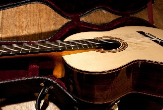

Szczegółowy opis gitar - wybierz dla siebie!
Chcesz rozpocząć swoją przygodę z gitarą i nie wiesz od czego zacząć? Na tej stronie znajdziesz podstawowe informacje o wszystkich gitarach dostępnych na rynku. W zależności od preferencji mamy do wyboru kilka typów, których szczegółowy opis znajdziesz w zakładce GALERIA.
Aby rozpocząć naukę warto jest zaopatrzyć się w instrument, który jest dostosowany do Ciebie. W zależności od typu gitary mamy wąskie i szerokie gryfy. Duże i małe pudła. Wycięcia w pudłach lub pełny owal. Struny nylonowe lub stalowe. Progi proste lub łukowe. Akustyczne, klasyczne, rezonansowe, elektryczne... Sprawdź sam!
Nasza strona to nie sklep, nie znajdziesz tu cen ani konkretnych modeli. Damy Ci wskazówkę czego szukać :)